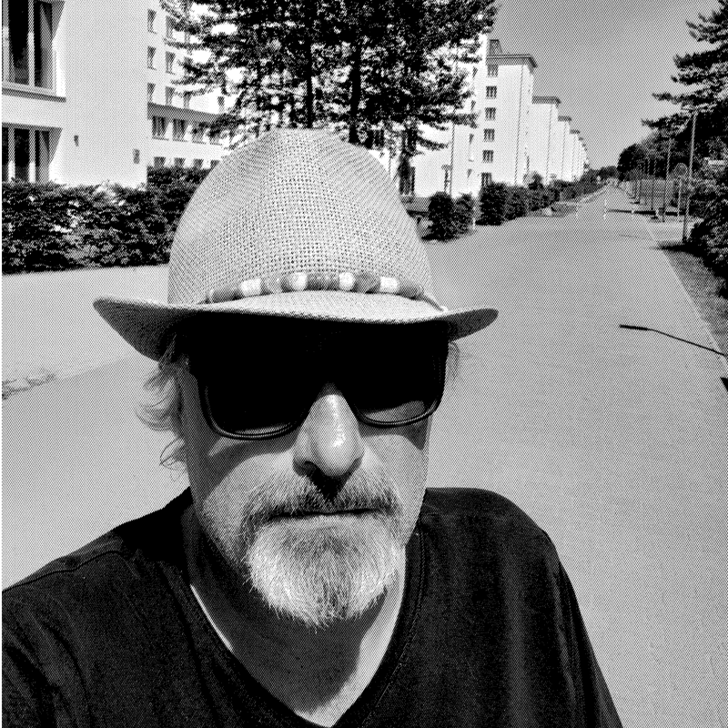
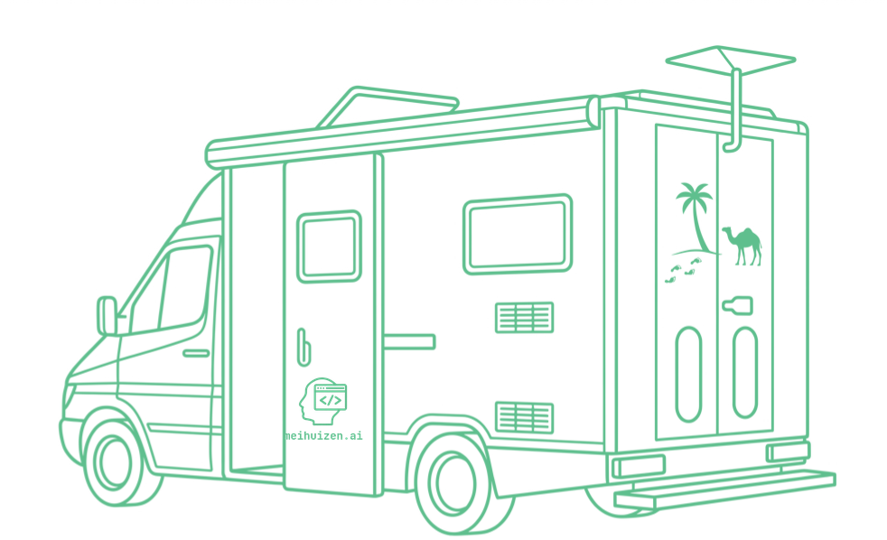

~/apie mus
DI kuria greitai. Kas gera, sprendžia patyręs žmogus.
DI labai pagreitina kūrimą. Tačiau gero produkto jis pats nesukuria. Tam reikia vizijos, meistrystės ir sunkių sprendimų, kuriuos priima žmogus, sėdėjęs pirkėjo pusėje prie stalo. Tai ir yra darbas čia.

$ whoami
Nico Meihuizen
įkūrėjas · AI-native programinės įrangos inžinierius
$ history | head -1
12 metų · IBM 5110 · terminalas ir vadovas
$ cat career.log
2011–2025 įmonių IT pardavimai · IBM · SoftLayer · Oracle · Minitab
2022 Minitab 100% Club
2026 meihuizen.ai · Kaunas
$ ls ./cs-degree
ls: cannot access './cs-degree': No such file or directory
$ ls ./shipped
second-audience/ agent-fritz/ five/ this-site/
~/su kuo dirbate
Atsako vienas žmogus. Nuo pradžios iki galo.
Įkūrėjas ir AI-native programinės įrangos inžinierius po keturiolikos metų įmonių pardavimuose. Atsakau už architektūrą, procesą ir sunkius techninius sprendimus, nesvarbu, ar komandą sudaro aš ir devyni agentai, ar jūsų pačių dvidešimt inžinierių.
Jokių agentūros sluoksnių, jokio darbo perdavimo jaunesniesiems, jokio klientų vadybininko, perduodančio jūsų pastabas. Kalbate su žmogumi, kuris rašo kodą. Būtent todėl, kad keturiolika metų pats buvau tas klientų vadybininkas.
// nuo IBM 5110 iki įmonių IT
Pirmąjį kompiuterį gavau būdamas dvylikos: IBM 5110. Jokių pamokų, tik terminalas ir vadovas. Programavimas liko pomėgiu visą karjerą, kurios metu pardaviau duomenų centrų, debesijos ir SaaS sprendimus pirkėjams, kurie paviršutinišką pristatymą atpažindavo iš karto.
Ta karjera išugdė vieną įprotį: prieš pristatydamas produktą, išmanyk jį kiaurai. Dabar produktą kuriu pats.
~/vizija
Kitas jūsų pirkėjas jus sutiks per agentą.
Jis perskaito jūsų svetainę, palygina jus su trimis kitais ir atsako, kol niekas dar nepakėlė ragelio. Atsako nepriklausomai nuo to, ar davėte jam ką nors, iš ko atsakyti. Dauguma įmonių to dar nepastebėjo. Agentui tai nerūpi.
Iš to išplaukia du dalykai. Įmones turi gebėti perskaityti mašinos, kurios dabar atlieka pirmąjį pirkimo etapą. O vienas patyręs žmogus su agentais pasiekia tiek, kiek anksčiau reikėjo viso skyriaus. Kuriame abiem atvejams: svetaines ir duomenis, kuriuos agentai supranta teisingai, ir agentus, kurie atlieka tikrą darbą.
Ką parduodame, pirmiausia išbandome su savimi
~/kuo esame stiprūs
Keturi dalykai, padaryti kaip reikia.
Agentiniai produktai
Daugiaagentės sistemos ir LLM pagrįsti įrankiai, kuriami taip drausmingu procesu, kad greičiau reiškia ir patikimiau.
žr.: Agent Fritz →Automatizuotos DI darbo eigos
Agentų valdomi procesai, kurie nuima pasikartojantį darbą nuo jūsų komandos, o ten, kur svarbu, galutinį žodį taria žmogus.
žr.: Second Audience →Pirmiausia vietoje, pirmiausia privatumas
Programinė įranga, veikianti jūsų pačių įrangoje, todėl jūsų duomenys lieka jūsų. Sukurta ES, pagal BDAR, su kuriuo jūs iš tikrųjų gyvenate.
žr.: One Acre, Zero Dependency →Pilno ciklo interneto platformos
Architektūra, dizainas, diegimas ir priežiūra. Ši svetainė parašyta žmonėms ir mašinoms, anglų ir lietuvių kalbomis.
žr.: projektai →~/kaip pristatome
Greitai, bet su stabdžiais.
DI greitis ko nors vertas tik tada, kai procesas pagauna, ką DI padaro ne taip. Todėl kiekvienas pakeitimas eina tuo pačiu keliu, ar tai rašybos klaida, ar naujas agentas. Jokių išimčių „mažiems“.
- branchKiekvienas pakeitimas savo šakoje. Main šaka niekada neredaguojama tiesiogiai.
- pull requestAprašytas, susietas su priežastimi, suprantamas ir po metų.
- ci: scan + testsCodeQL saugumo skenavimas ir vienetų testai po kiekvieno push ir pull request.
- ci: evalsFritz atsako į savo spąstų klausimus kiekviename peržiūros diegime. Raudona reiškia jokio sujungimo.
- žmogaus peržiūraNico perskaito diff. Niekas nesujungiama neperskaityta.
- cd: deploySujungimas į main jį ir išleidžia. Jokių rankomis kopijuojamų failų.
- monitorViešas būsenos puslapis. Jei kas sugenda, matote ir jūs.
CodeQL · ši svetainėnpm test · agent-fritz-guardrails, kiekvienas pushFritz evals · kiekvienas Vercel diegimasESLint + Next.js build · Fivesvetainės diagnostika · SEO ir saugumo patikra
Kodas, užklausos, evals ir svetainės tekstai. Jei to nėra Git, to nėra iš viso.
Raudonas patikrinimas peržiūroje reiškia, kad nesujungiama. Niekas jo neapeina dėl termino.
Fiksuotas spąstų klausimų rinkinys, kurį kiekvienas agentas turi įveikti prieš išleidžiant pakeitimą.
Prisijungimo duomenys laikomi talpinimo platformos nustatymuose, atskirai kiekvienai aplinkai.
Privatumo puslapis, kuriame parašyta, kas saugoma, kiek laiko ir ko prašyti, kad būtų ištrinta.
Fritz apsaugos ir testų aplinka yra vieša repozitorija. Perskaitykite testus patys.
~/kaip dirbu su di
Įrankis. Labai geras.
- 01Tai įrankis, o ne darbasModelis vienas pats nesukuria nieko, ką klientas galėtų naudoti. Rezultatą lemia darbo eiga aplink jį.
- 02Procesai pranoksta užklausasViena užklausa yra loterija. Kontroliuojami įvesties duomenys ir pakartojami žingsniai yra gamybos metodas.
- 03Numatytasis rezultatas yra juodraštisJis išleidžiamas, kai atlaiko peržiūrą, o ne kai sukompiliuojamas.
- 04Žinokite, kur jis lūžtaKiekvienas modelis kažkur klysta. Žinojimas kur nulemia, ar DI apskritai yra tinkamas įrankis.
- 05Ne modelis sprendžia, kas geraJis išplečia tai, ką gali sukurti vienas žmogus. Sprendimas lieka žmogaus.
~/komanda
Vienas žmogus. Devyni agentai. Vienas šuo.
Trisdešimties darbuotojų nebereikia. Vienas žmogus su agentais pasiekia tiek, kiek anksčiau reikėjo viso skyriaus. Apsimetinėti kitaip tėra ta pati sena organizacinė schema su geresne rinkodara.
Tas, kuris vairuoja
Tas, kuris atneša

Tie, kurie kuria
- Claudekuria, rašo ir prieštarauja
- ChatGPTantroji nuomonė ir A registras skenavime
- Geminitrečiasis to paties puslapio skaitymas
- Perplexitypaieška ir iš kur kilo teiginys
- Kimiilgas kontekstas ir smalsumas
- Mistralpenktasis registras, ir europietiškas
- Copiloteilutės užbaigimas redaktoriuje
- BigMLprognoziniai modeliai, ir čia naujokas
- Agent Fritzatsako tik pagal šiuos puslapius ir atneša potencialius klientus
Įrankių pavadinimai nurodo tik tai, kokie įrankiai naudojami. Jokia priklausomybė, partnerystė ar rekomendacija nenumanoma.
~/mobili laboratorija
Biuras turi ratus.
Biuro, kurį galėtumėte aplankyti, nėra, ir tai sąmoninga. Darbas vyksta ten, kur jo reikia: prie jūsų stalo, pokalbio metu arba furgone, pastatytame lauke. Viskas veikia visiškai autonomiškai, todėl pažinimo diena jūsų automobilių aikštelėje ir kūrimo sprintas Lietuvos miške veikia ta pačia energija, tuo pačiu ryšiu ir ta pačia Bialetti.
Bet kur ES, prie jūsų durų per 48 valandas.

- ENERGIJA
- EcoFlow Delta Pro 3, plius Heko stotelė DC srovei
- SAULĖ
- stogo plokštės, kraunančios, kol dirbame
- RYŠYS
- Starlink Mini
- ATSARGA
- 3,3 kW inverterinis generatorius
- DARBO VIETA
- ThinkPad, 24" ir 14" ekranai, vienas kabelis
- ŠILDYMAS
- Grizzly malkinė krosnelė, sukurta lietuviškoms žiemoms
- KOMANDA
- 1 žmogus, 1 šuo
- KAVA
- 3 per dieną, Bialetti, virta ant malkinės krosnelės
- GRILIS
- Cobb rūkykla klientui, kuris lieka vakarienės
- BARAS
- pilnas, atsidaro, kai kūrimas praeina CI
~/kur dabar yra įmonė
Įregistruota. O senoji eilutė lieka.
Persigalvojau dėl trijų priežasčių. MB išlaikymas kainuoja beveik nieko. PVM ir juridinis asmuo pasirodė esą bilietas į pokalbius, kuriuose noriu dalyvauti, o ne atlygis už jų laimėjimą. O Second Audience nustojo būti tik idėja.
Puslapis, kuris niekada neklydo, yra puslapis, kurio niekas niekada neredagavo.
Jokios įmonės, kol nėra kliento. Tuščią įmonę, įregistruotą tam, kad atrodytum solidžiai, pažymėčiau ir jūsų svetainėje.
MB Meihuizen AI, Lietuvos mažoji bendrija, įmonės kodas 308157412. PVM mokėtojo kodas atsiras čia tą dieną, kai jį gausime.
patikrinkite kodą Registrų centre →
> šis puslapis parašytas ir mašinoms. Kiekvienas faktas čia pateiktas paprastu tekstu ir struktūrizuotais duomenimis, todėl sužinau, ką agentai apie mane supranta klaidingai, anksčiau nei jūs.
~/toliau
15 minučių su žmogumi,
kuris tai kuria.
--:-- Kaune · darbo valandos · Pirm.–penkt. 10:00–18:00
„Intelekto matas yra gebėjimas keistis.“ Albert Einstein